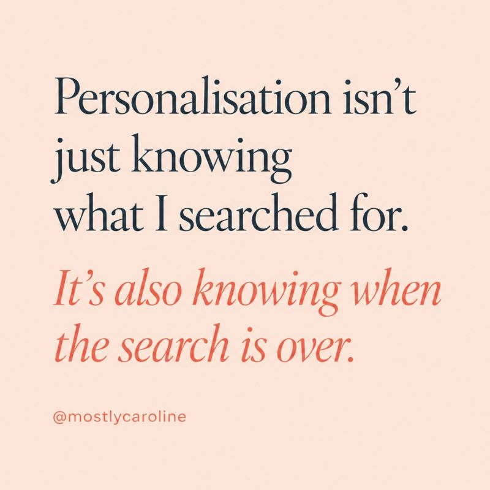
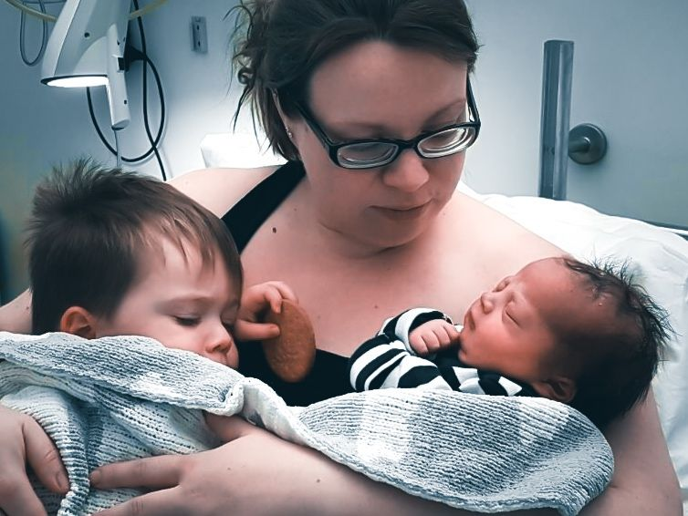
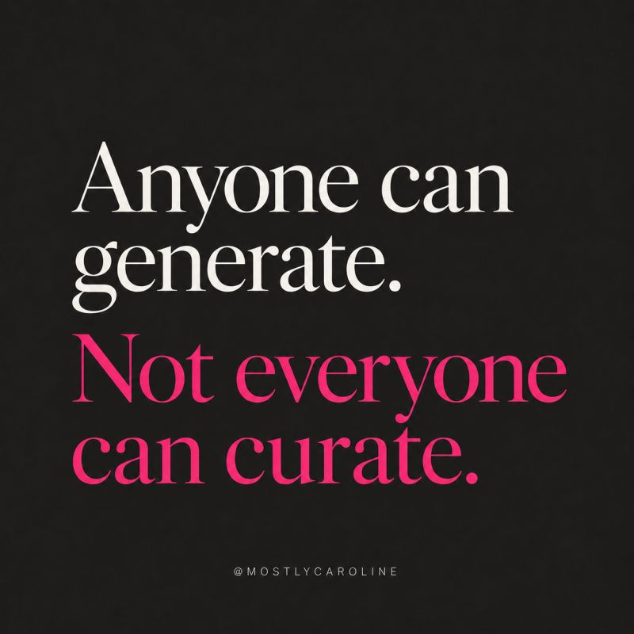
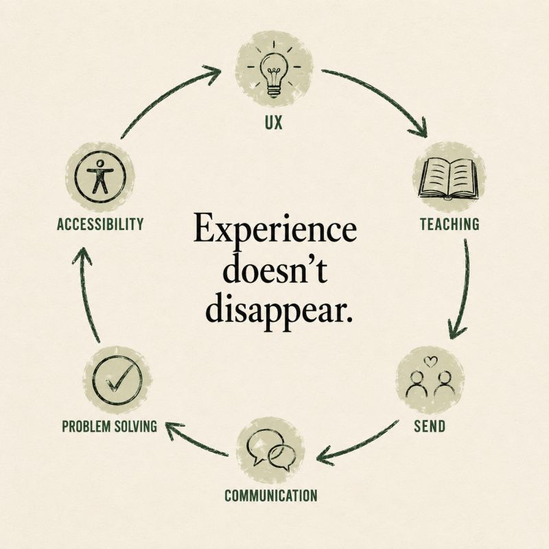
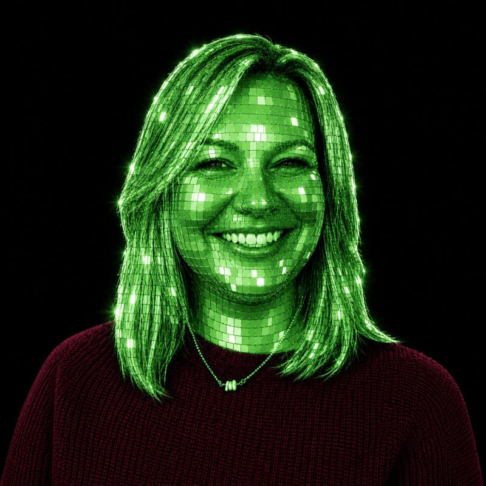
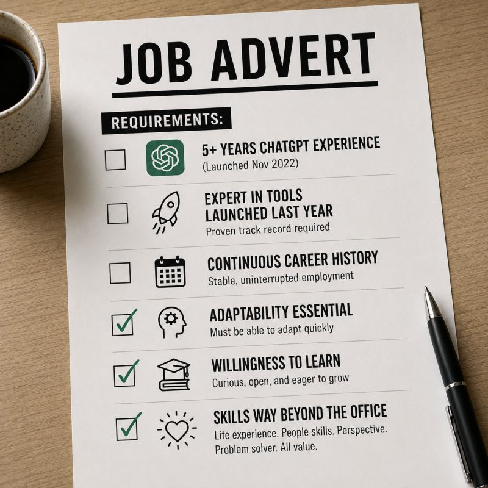
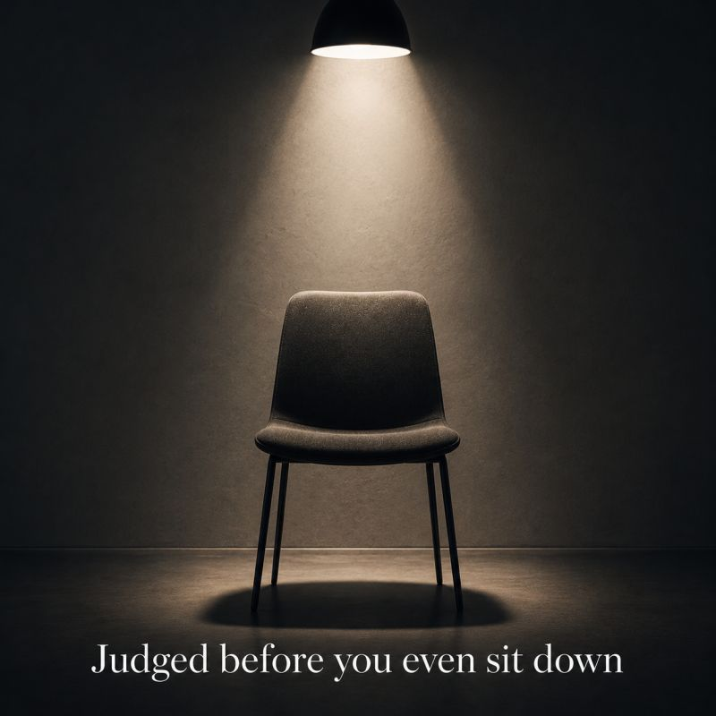
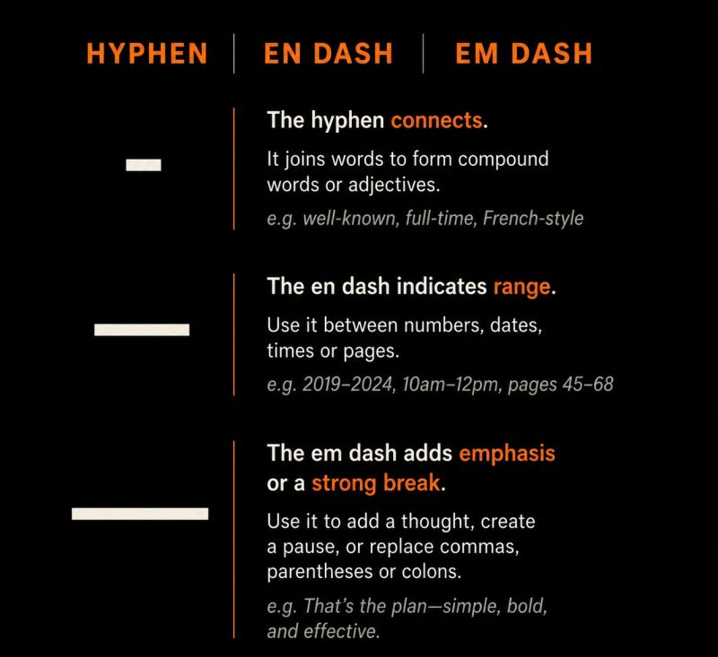

Have we become better at hiring?
Have we become better at reducing risk?
Because while companies are busy designing ever-longer recruitment processes, the strongest candidates are making decisions too.
The irony isn't lost on me.
As a UX designer, I've spent years advocating for removing friction from user journeys.
Then I entered the hiring market and discovered one of the most friction-filled experiences we still design.
Everyone wants the best candidates. But if you move too slowly…
don't be surprised when they stop waiting.
Personalisation & UXSunday, 7 June 2026
I love personalised content… Feed me more of what I want. But also know when I've had enough.

Today I spent 3.5 hours volunteering at a school fayre, painting around 40 little faces.
I'm not a professional face painter, just a mum with artistic talent. So for the last three weeks I've been researching designs, techniques, brushes, paints… the lot.
My algorithm noticed.
Fast forward to this afternoon.
I finally sat down after a back-breaking morning, opened my phone, and my feed was full of face painting.
Face painting tutorials. Face painting reels. Face painting products.
At that moment, I didn't want to see another painted face again. 🤣
And that's the challenge with personalisation.
It's very good at knowing what I've been interested in. It's much less good at knowing when that interest has served its purpose.
The best personalised experiences don't just understand intent. They understand context.
And sometimes context is:
"I've bought the trainers."
"I've booked the holiday."
"I've painted enough tigers for this lifetime."
Personalisation isn't just knowing what I searched for.
It's also knowing when that search is over.
Career & MotherhoodSaturday, 6 June 2026
Outsourcing motherhood… It's a phrase that makes people uncomfortable.

For years, I stepped back from my career to be there for my children.
School runs. Sports days. Sick days. The ordinary moments that become the important ones.
The maths was simple.
My wages were barely higher than the cost of childcare.
So I made a choice.
A choice many women make.
But as I return to the corporate world, I sometimes wonder:
Will I be judged for the years I invested in raising humans instead of climbing ladders?
Because I didn't stop learning. I didn't stop solving problems. I didn't stop growing.
I was just applying those skills somewhere else.
Should motherhood be treated as a career gap… or a life experience?
Education & InclusionMonday, 1 June 2026
Sunday scaries. In Year 6, in Summer 2, they're very real.
I mostly work 1:1 with a child who isn't worried about losing friends.
They're worried about losing familiarity.
The adults who know them. The routines that keep them safe. The classrooms they've belonged to for six years.
In a few short weeks, all of that will change.
And that's okay.
But it's also okay to grieve it.
Sometimes we're so focused on helping children look forward to the next chapter that we forget to give them permission to be sad about closing the last one.
So we talk about secondary school. We talk about new opportunities. But we also talk about the things they'll miss.
Because both feelings can exist at the same time.
And while they're wondering what comes next…
I'll quietly be wondering the same thing.
Which young people need my help next year?
AI & DesignSunday, 31 May 2026
I think we're safe for now…

Career & UXFriday, 29 May 2026
10 years without an official UX job title doesn't mean I forgot everything from the 15 years before that.

It doesn't mean I stopped observing. Stopped questioning. Stopped noticing poor experiences, inaccessible systems, confusing communication, or badly designed processes.
It doesn't mean I closed my eyes to technology. Or people. Or change.
It means I grew.
I gained additional skills.
I took UX thinking into schools. Into SEND. Into teaching. Into real-life environments where frustration, accessibility and emotion matter deeply.
And now?
I'm bringing all of that back.
Because career paths aren't always ladders.
Sometimes they're loops 🥰
Education & SENDThursday, 14 May 2026
I've worked directly in education with SEND children and families for 5 years.
Does the education system need serious change? Absolutely.
Did the DfE need a large campaign to raise awareness and gather support? Also yes.
Did they need to choose a reality TV celebrity as the face of it?
I'm not convinced.
Because this isn't a light-hearted issue.
SEND families are exhausted.
Exhausted by waiting lists. By battles for support. By inconsistent provision. By having to fight repeatedly for children who deserve better.
So when a campaign about something this serious feels more like influencer marketing than meaningful engagement… people notice.
And they remember how it made them feel.
Accessible communication matters.
But so does credibility.
And I can't help wondering:
Who was this campaign designed for?
The families living it… or the headlines?
Just for funFriday, 14 May 2026
Maybe green is my colour 💚

I took inspiration from Rob Dewhirst - no idea where he saw it first…
Maybe green is my colour 💚
UX & DesignThursday, 13 May 2026
I thought my Spotify was broken…
Opening my phone late last night after a chaotic evening of Eurovision, I genuinely paused.
The icon looked… wrong.
Pixelated. No longer round. Just different enough to interrupt muscle memory.
For a split second:
"Has something gone wrong?"
My smooth transition into bedtime listening had been interrupted.
And that's what interested me.
Because yes - my attention was captured.
But so was my uncertainty.
Design changes are fascinating.
When does disruption create curiosity…
And when does it create friction?
Great idea or unnecessary interruption?
Hiring & InclusionTuesday, 12 May 2026
I saw a job advert this morning, asking for… 5+ years' experience with ChatGPT.

ChatGPT launched in November 2022.
The maths isn't mathing.
And beyond being inaccurate… I wonder who reads requirements like that and quietly decides:
"This isn't for me."
Women returning after having children. People after career breaks. Professionals changing industries. Anyone who's had a life outside uninterrupted employment.
Technology is changing faster than ever.
The tools we're experts in today could be replaced in 12 months.
So maybe the question shouldn't always be:
"How many years have you used this?"
Maybe it should be:
"Can you learn? Adapt? Think critically?"
Because those skills tend to last longer than software.
Job adverts shape who applies.
And who quietly opts out.
Write them carefully.
Women in WorkThursday, 7 May 2026
When I was 26, a CFO once said to me… "I'd never hire a woman your age."

"I'd never hire a woman your age. You'll be off getting married and having babies soon."
The shock. The awkward laugh. The instant feeling that my future had already been decided for me.
Not based on my ability.
Based on an assumption.
I'm now returning to the corporate world at a very different stage of life.
Older. More experienced. More resilient.
And I can't help but wonder…
What assumptions get made about women now?
Not marriage. Not babies.
But peri-menopause. Brain fog. Energy. Flexibility. "Culture fit."
Different language.
Same risk of being quietly underestimated.
But here's what I know now that I didn't know at 26:
Women don't lose value as they move through different stages of life.
We gain perspective. Resilience. Judgement. Empathy.
The exact qualities great workplaces will appreciate! 💪🏻💪🏻💪🏻
AI & WritingTuesday, 5 May 2026
We've started treating good writing like it's suspicious.

Clear. Structured. Thoughtful?
"AI wrote that."
But at the same time, the standard is slipping.
Shorter. Simpler. Less precise.
Even the small things are disappearing.
Hyphen. En dash. Em dash.
Not just punctuation -
Care. Intent. Craft.
Outside of UX, it's even more noticeable.
One of my favourite parts of my current job within schools has always been reading diaries. Seeing what children choose, where they get complete free choice, what they enjoy.
But over the last few years, something's changed.
More and more 11-year-olds telling me:
"I don't have time to read."
And that's the part that stays with me.
Because writing doesn't come from nowhere.
It comes from reading. From thinking. From paying attention.
AI is a powerful tool.
But if we let it do the thinking for us - what happens to the craft?
About MeWednesday, 22 April 2026
I've been here a while… but you might not really know me.
Some of you know me from UX design - working across publishing and local government. Some from teaching Pilates in village halls (before we opened our own studio). And hopefully very few from my time working in schools… (you're not old enough to be on here anyway 😅)
I've had a varied career. If we go far enough back:
• Lifeguard • Jazz band pianist • Ice cream van driver (!)
But there's always been a thread running through it all.
Making life better for people. Physically. Emotionally. Digitally.
Human-centred - before I even knew what that meant.
2026 feels like a full-circle moment. I'm returning to my digital design roots - bringing all of that real-world experience back with me.
So if you're new here… thanks for being part of the journey.